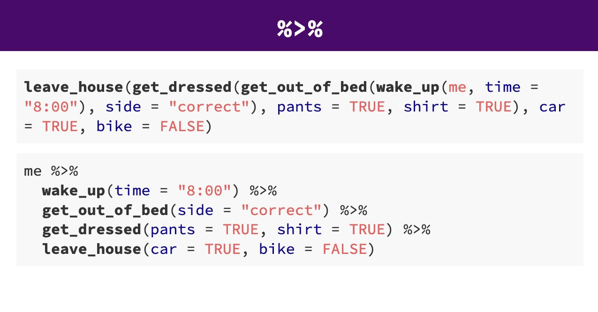
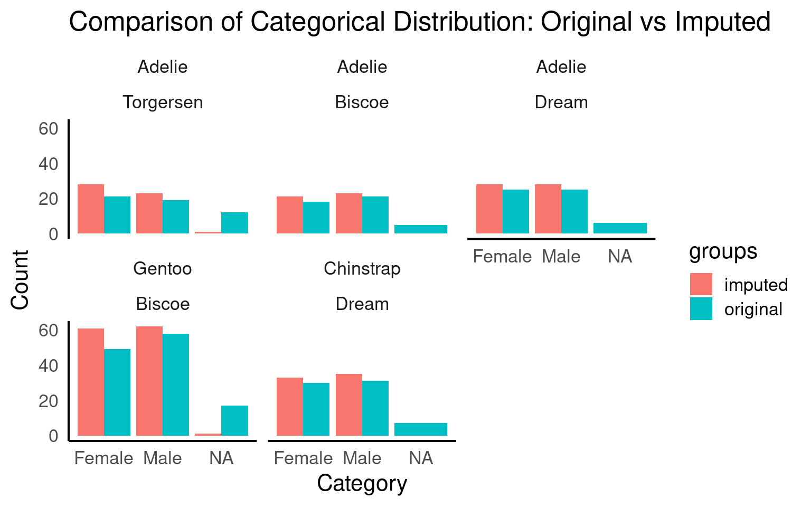
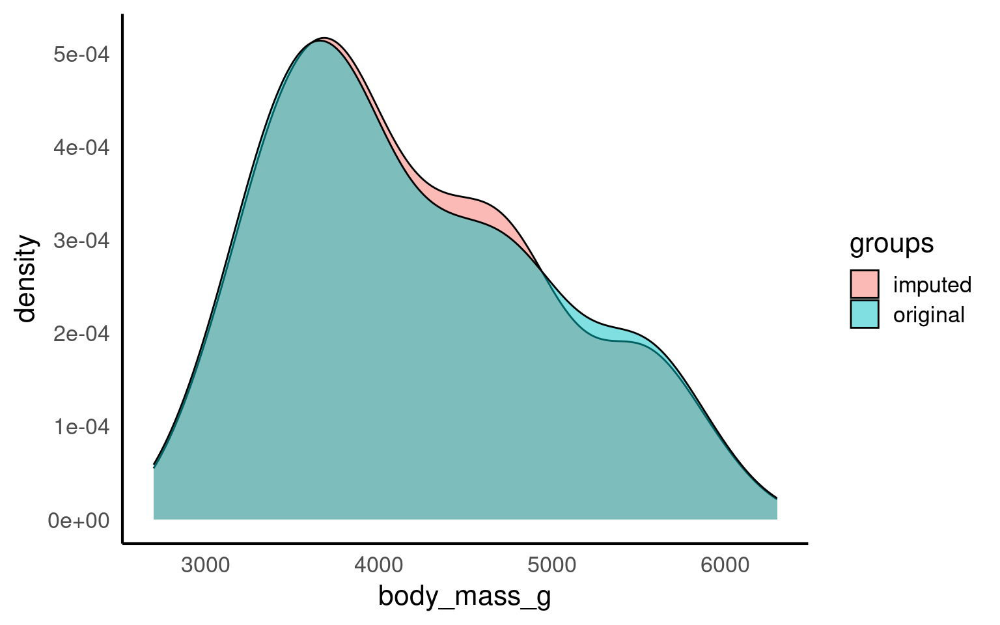
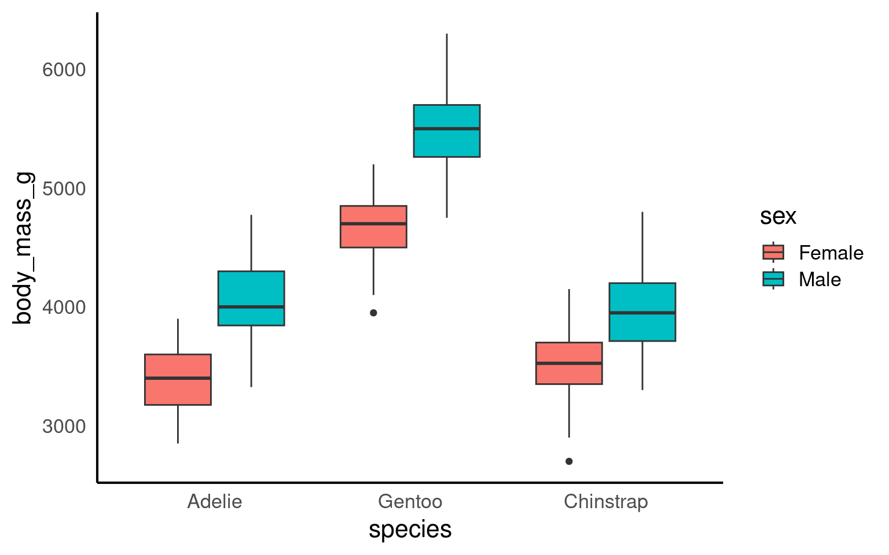
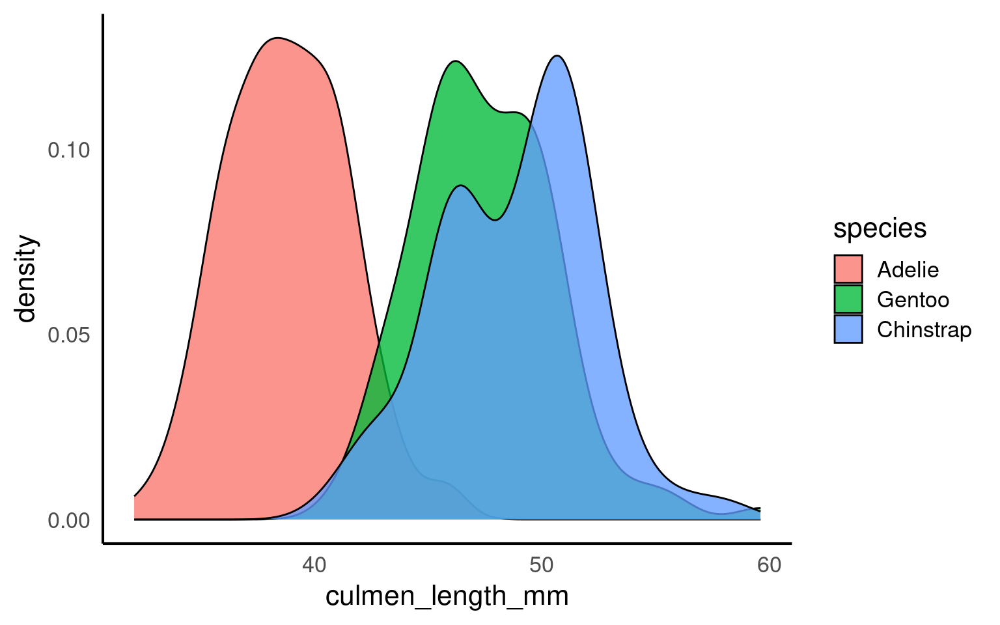
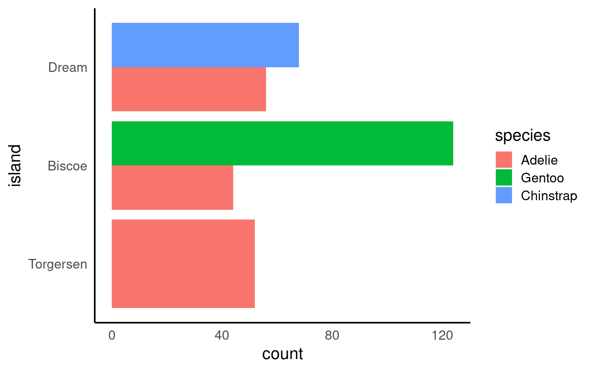
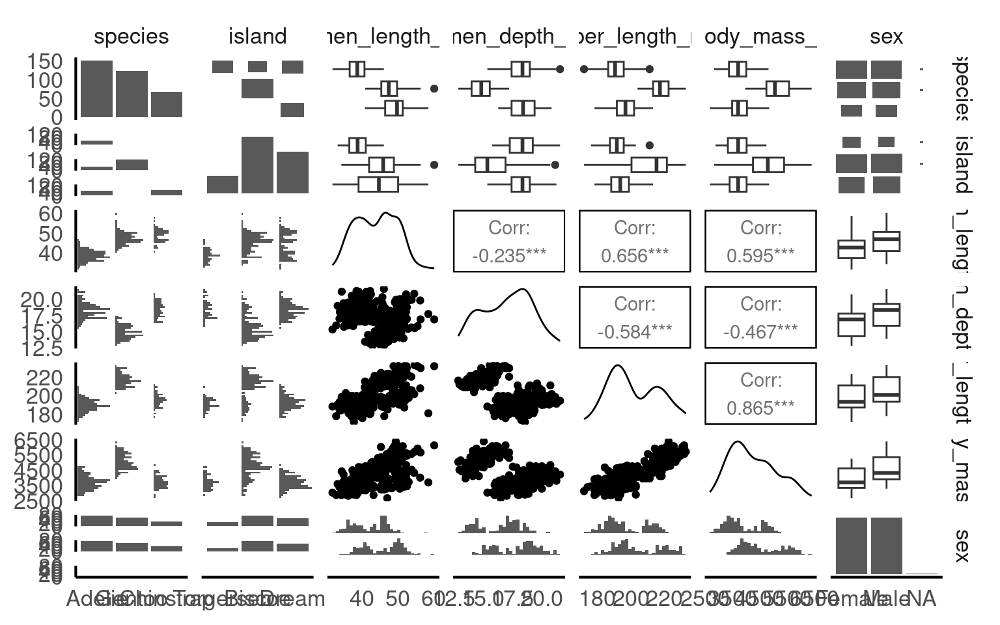

7 Managing Data
Data analysis begins well before any sophisticated statistical modeling takes place. A thorough understanding of your dataset—how it is structured, what it contains, and what potential issues lurk within—is key to drawing reliable conclusions. In this chapter, we will explore the crucial first steps of any data-driven project: importing your data, checking for errors, and developing an initial understanding of its characteristics via visualisation.
Our approach will center around the tidyverse suite of packages in R, particularly those that make data import, cleaning, and exploration straightforward. Although powerful AI tools exist that can automate many parts of the cleaning and exploratory process, it is important for you, as an analyst, to retain a hands-on command of these steps. Getting comfortable with R functions and understanding each step of data wrangling will sharpen your skills and make your work reproducible and transparent.
Specifically, we will:
Import Data: Learn how to bring data into R from various formats (CSV, Excel, and more) using Tidyverse functions (e.g., readr, readxl).
Identify and Correct Errors: Check for typos, formatting inconsistencies, unwanted whitespace, missing data, and duplicated entries. We will explore ways to standardize and clean these issues using packages such as
dplyrandtidyr.Understand Data Through Visualisation: Use
ggplot2to create visual summaries that reveal patterns or anomalies in your dataset, helping you spot potential problems and gain insights that guide further analysis.
By taking the time to properly import, clean, and explore your data, you will lay a solid foundation for more advanced analyses in the chapters to come. Every decision you make at this stage—from how you handle missing values to how you correct typographical errors—has a profound impact on your final results. Let’s begin by learning how to bring your dataset into R cleanly and reliably, so we can later use our visual and numerical explorations to its fullest advantage.
7.1 Importing Data
When working with datasets in R, importing structured data efficiently is a crucial first step in analysis. The readr package, which is part of the tidyverse, provides powerful tools for reading and writing data. One of its key functions, read_csv(), is specifically designed for handling comma-separated values (CSV) files.
7.2 Why Use read_csv() Instead of Base R Functions?
Base R provides the read.csv() function for reading CSV files, but readr offers several advantages:
Speed:
read_csv()is optimized for performance, making it significantly faster when working with large datasets.Automatic Data Type Detection: The function intelligently determines the appropriate data types for each column, reducing the need for manual conversions.
Tibble Output: Instead of a traditional data frame,
read_csv()returns a tibble, which has improved printing and subsetting features.More Control Over Missing Values: Users can define how missing values are interpreted, making data cleaning easier.
To import a CSV file, simply use:
This command reads the CSV file and stores it in the data object, with columns automatically assigned the most appropriate data types.
7.2.1 Understanding Key Arguments in read_csv()
file: The path to the CSV file to be read.col_names: A logical or character vector. If TRUE, the first row is used as column names. If FALSE, generic column names are assigned.col_types: Allows manual specification of column types using cols(), overriding automatic type detection.skip: The number of lines to skip before reading data, useful when dealing with files that have introductory text.
To access the full documentation for read_csv(), you can use:
7.2.2 Reading a CSV File Using a Relative Filepath
When we use R projects, instead of an absolute path, you can use a relative path to reference a file within your working directory:
Assuming the file is in a ‘data’ folder inside your project directory
This command reads the CSV file and stores its contents in a variable named data. The read_csv() function automatically infers data types, reducing the need for manual data type conversions.
7.2.3 The here Package:
To further enhance this organization and ensure that file paths are independent of specific working directories, the here package comes into play. The here() function provided by this package builds file paths relative to the top-level directory of your project.
In the above project example you have raw data files in the data/raw directory, scripts in the scripts directory, and you want to save processed data in the data/processed directory.
To access this data using a relative filepath we need:
To access this data with here we provide the directories and desired file, and here() builds the required filepath starting at the top level of our project each time
Import some data
Create a new R project
Make sure it contains a data folder and a scripts folder
Make a new script
Include today’s packages at the top
Import the
messy_penguins.csvfileAdd comments to your code as you progress
7.2.4 Inspecting Data with glimpse()
After reading the file, it’s useful to inspect its structure using glimpse() from the dplyr package:
# Quickly inspect the structure of the dataset, including column names and types
glimpse(messy_penguins)Rows: 362
Columns: 15
$ studyName <chr> "PAL0708", "PAL0708", "PAL0708", "PAL0708", "PAL…
$ `Sample Number` <dbl> 1, 2, 3, 4, 5, 6, 7, 8, 9, 10, 11, 12, 13, 14, 1…
$ Species <chr> "Adelie Penguin (Pygoscelis adeliae)", "Adelie P…
$ Region <chr> "Anvers", "Anvers", "Anvers", "Anvers", "Anvers"…
$ Island <chr> "Torgersen", "Torgersen", "Torgersen", "Torgerse…
$ Stage <chr> "Adult, 1 Egg Stage", "Adult, 1 Egg Stage", "Adu…
$ `Individual ID` <chr> "N1A1", "N1A2", "N2A1", "N2A2", "N3A1", "N3A2", …
$ `Clutch Completion` <chr> "Yes", "Yes", "Yes", "Yes", "Yes", "Yes", "No", …
$ `Date Egg` <chr> "11/11/2007", "11/11/2007", "16/11/2007", "16/11…
$ `Culmen Length (mm)` <dbl> 39.1, 39.5, 40.3, NA, 36.7, 39.3, 38.9, 39.2, 34…
$ `Culmen Depth (mm)` <dbl> 18.7, 17.4, 18.0, NA, 19.3, 20.6, 17.8, 19.6, 18…
$ `Flipper Length (mm)` <dbl> 181, 186, 195, NA, 193, 190, 181, 195, 193, 190,…
$ `Body Mass (g)` <dbl> 3750, 3800, 3250, NA, NA, 3650, 3625, 4675, 3475…
$ Sex <chr> NA, "FEMALE", "FEMALE", NA, NA, "MALE", "FEMALE"…
$ Comments <chr> "Not enough blood for isotopes.", NA, NA, "Adult…glimpse() provides a compact summary of the tibble, showing column names, data types, and example values.
7.3 Tibbles
A tibble is a modern version of a data frame that prints in a cleaner format.
We get tibbles by default when we use read_csv() instead of read.csv()
Unlike base R data frames, tibbles:
Provide information on the data type at the top of each column
Display only the first ten rows and as many columns as fit in the console.
Provide more readable printing, especially for large datasets.
7.3.1 Reading Other Delimited File Types
readr also provides functions for importing other delimited file types:
- Tab-separated files (.tsv):
- Semicolon-separated files (.csv2):
- Files with custom delimiters:
readr functions:
| Function | Description |
|---|---|
read_csv() |
CSV file format |
read_tsv() |
TSV (Tab-Separated Values) file format |
read_delim() |
User-specified delimited files |
read_fwf() |
Fixed-width files |
read_table() |
Whitespace-separated files |
read_log() |
Web log files |
readxl::read_excel() |
Read Excel files |
By mastering these functions, you can efficiently handle various structured data formats in R.
7.4 Describing the Data
Before working with your data, it’s essential to understand its underlying structure and content. In this section, we’ll use powerful functions like glimpse(), str(), summary(), head(), tail() and the add-on function skimr::skim() to thoroughly examine your dataset. These tools provide insights into data types, variable distributions, and sample records, helping you identify initial issues such as missing values or inconsistent data types. By gaining a clear understanding of your data’s structure, you’ll be better equipped to address any problems and proceed confidently with data cleaning and analysis.
We already tried the function dplyr::glimpse(). When we run summary() we get similar information, in addition for any numerical values we get summary statistics such as mean, median, min, max, quartile ranges and any missing (NA) values. For categories we get the frequency of each category (and any missing values).
studyName Sample Number Species Region
Length:362 Min. : 1.00 Length:362 Length:362
Class :character 1st Qu.: 29.00 Class :character Class :character
Mode :character Median : 58.00 Mode :character Mode :character
Mean : 63.32
3rd Qu.: 95.75
Max. :152.00
Island Stage Individual ID Clutch Completion
Length:362 Length:362 Length:362 Length:362
Class :character Class :character Class :character Class :character
Mode :character Mode :character Mode :character Mode :character
Date Egg Culmen Length (mm) Culmen Depth (mm) Flipper Length (mm)
Length:362 Min. :32.10 Min. :13.10 Min. :172.0
Class :character 1st Qu.:39.20 1st Qu.:15.68 1st Qu.:190.0
Mode :character Median :44.10 Median :17.30 Median :197.0
Mean :43.87 Mean :17.17 Mean :200.7
3rd Qu.:48.42 3rd Qu.:18.62 3rd Qu.:213.0
Max. :59.60 Max. :21.50 Max. :231.0
NA's :2 NA's :2 NA's :2
Body Mass (g) Sex Comments
Min. :2700 Length:362 Length:362
1st Qu.:3550 Class :character Class :character
Median :4000 Mode :character Mode :character
Mean :4197
3rd Qu.:4750
Max. :6300
NA's :44 Finally the add-on package skimr provides the function skimr::skim() provides an easy to view set of summaries including column types, completion rate, number of unique variables in each column and similar statistical summaries along with a small histogram for each numeric variable.
# Use the skimr package to generate a comprehensive summary of each column,
# including data types, missing values, and descriptive statistics
skim(messy_penguins)| Name | messy_penguins |
| Number of rows | 362 |
| Number of columns | 15 |
| _______________________ | |
| Column type frequency: | |
| character | 10 |
| numeric | 5 |
| ________________________ | |
| Group variables | None |
Variable type: character
| skim_variable | n_missing | complete_rate | min | max | empty | n_unique | whitespace |
|---|---|---|---|---|---|---|---|
| studyName | 0 | 1.00 | 7 | 7 | 0 | 3 | 0 |
| Species | 0 | 1.00 | 33 | 41 | 0 | 9 | 0 |
| Region | 0 | 1.00 | 6 | 6 | 0 | 1 | 0 |
| Island | 0 | 1.00 | 5 | 9 | 0 | 3 | 0 |
| Stage | 0 | 1.00 | 18 | 18 | 0 | 1 | 0 |
| Individual ID | 0 | 1.00 | 4 | 6 | 0 | 190 | 0 |
| Clutch Completion | 0 | 1.00 | 2 | 3 | 0 | 2 | 0 |
| Date Egg | 0 | 1.00 | 10 | 10 | 0 | 50 | 0 |
| Sex | 49 | 0.86 | 4 | 6 | 0 | 2 | 0 |
| Comments | 305 | 0.16 | 18 | 68 | 0 | 10 | 0 |
Variable type: numeric
| skim_variable | n_missing | complete_rate | mean | sd | p0 | p25 | p50 | p75 | p100 | hist |
|---|---|---|---|---|---|---|---|---|---|---|
| Sample Number | 0 | 1.00 | 63.32 | 40.57 | 1.0 | 29.00 | 58.0 | 95.75 | 152.0 | ▇▇▆▅▃ |
| Culmen Length (mm) | 2 | 0.99 | 43.87 | 5.42 | 32.1 | 39.20 | 44.1 | 48.42 | 59.6 | ▃▇▇▆▁ |
| Culmen Depth (mm) | 2 | 0.99 | 17.17 | 1.96 | 13.1 | 15.67 | 17.3 | 18.62 | 21.5 | ▅▅▇▇▂ |
| Flipper Length (mm) | 2 | 0.99 | 200.71 | 14.07 | 172.0 | 190.00 | 197.0 | 213.00 | 231.0 | ▂▇▃▅▂ |
| Body Mass (g) | 44 | 0.88 | 4196.62 | 802.47 | 2700.0 | 3550.00 | 4000.0 | 4750.00 | 6300.0 | ▃▇▅▃▂ |
7.4.1 Tidy data
We are going to learn how to organise data using the tidy format1. This is because we are using the tidyverse packages Wickham (2023). This is an opinionated, but highly effective method for generating reproducible analyses with a wide-range of data manipulation tools. Tidy data is an easy format for computers to read. It is also the required data structure for our statistical tests that we will work with later.
Here ‘tidy’ refers to a specific structure that lets us manipulate and visualise data with ease. In a tidy dataset each variable is in one column and each row contains one observation. Each cell of the table/spreadsheet contains the values. One observation you might make about tidy data is it is quite long - it generates a lot of rows of data - you might remember then that tidy data can be referred to as long-format data (as opposed to wide data).

Is the messy_penguins data in tidy format?
There may be missing data, typos and other errors - but the structure of the data conforms to tidy data principles. This is a key concept, so if you got this answer wrong, please ask for help.
See the Appendix on Data reshaping for what to do when data is not tidy.
7.4.2 Clean column names
When we run colnames() we get the identities of each column in our dataframe
Study name: an identifier for the year in which sets of observations were made
Region: the area in which the observation was recorded
Island: the specific island where the observation was recorded
Stage: Denotes reproductive stage of the penguin
Individual ID: the unique ID of the individual
Clutch completion: if the study nest observed with a full clutch e.g. 2 eggs
Date egg: the date at which the study nest observed with 1 egg
Culmen length: length of the dorsal ridge of the bird’s bill (mm)
Culmen depth: depth of the dorsal ridge of the bird’s bill (mm)
Flipper Length: length of bird’s flipper (mm)
Body Mass: Bird’s mass in (g)
Sex: Denotes the sex of the bird
Often we might want to change the names of our variables. They might be non-intuitive, or too long. Our data has a couple of issues:
Some of the names contain spaces
Some of the names have capitalised letters
Some of the names contain brackets
This dataframe does not like these so let’s correct these quickly. R is case-sensitive and also doesn’t like spaces or brackets in variable names. The janitor package function clean_names will by default change all column names to snake_case. If we wish to do manual renaming of column names we can also the use the dplyr function rename().
# CLEAN DATA ----
# clean all variable names to snake_case
# using the clean_names function from the janitor package
# note we are using assign <-
# to overwrite the old version of penguins
# with a version that has updated names
# this changes the data in our R workspace
# but NOT the original csv file
# clean the column names
# assign to new R object
penguins_clean_names <- janitor::clean_names(messy_penguins)
# quickly check the new variable names
colnames(penguins_clean_names) [1] "study_name" "sample_number" "species"
[4] "region" "island" "stage"
[7] "individual_id" "clutch_completion" "date_egg"
[10] "culmen_length_mm" "culmen_depth_mm" "flipper_length_mm"
[13] "body_mass_g" "sex" "comments" 7.5 dplyr
In this section we will be introduced to some of the most commonly used data wrangling functions, these come from the dplyr package (part of the tidyverse). These are functions you are likely to become very familiar with.
Try running the following functions directly in your consoleThe R console is the interactive interface within the R environment where users can type and execute R code. It is the place where you can directly enter commands, see their output, and interact with the R programming language in real-time. or make a scraps.R scrappy file to mess around in.
| verb | action |
|---|---|
| select() | choose columns by name |
| filter() | select rows based on conditions |
| arrange() | reorder the rows |
| summarise() | reduce raw data to user defined summaries |
| group_by() | group the rows by a specified column |
| mutate() | create a new variable |
7.5.1 Select
If we wanted to create a dataset that only includes certain variables, we can use the dplyr::select() function from the dplyr package.
For example I might wish to create a simplified dataset that only contains Species, Sex, Flipper Length (mm) and Body Mass (g).
Run the below code to select only those columns
Alternatively you could tell R the columns you don’t want e.g.
Note that select() does not change the original penguins tibble. It spits out the new tibble directly into your console.
If you don’t save this new tibble, it won’t be stored. If you want to keep it, then you must create a new object.
When you run this new code, you will not see anything in your console, but you will see a new object appear in your Environment pane.
7.5.2 Filter
Having previously used dplyr::select() to select certain variables, we will now use dplyr::filter() to select only certain rows or observations. For example only Adelie penguins.
We can do this with the equivalence operator ==
We can use several different operators to assess the way in which we should filter our data that work the same in tidyverse or base R.
| Operator | Name |
|---|---|
| A < B | less than |
| A <= B | less than or equal to |
| A > B | greater than |
| A >= B | greater than or equal to |
| A == B | equivalence |
| A != B | not equal |
| A %in% B | in |
If you wanted to select all the Penguin species except Adelies, you use ‘not equals’.
This is the same as
You can include multiple expressions within filter() and it will pull out only those rows that evaluate to TRUE for all of your conditions.
For example the below code will pull out only those observations of Adelie penguins where flipper length was measured as greater than 190mm.
7.5.3 Arrange
The function arrange() sorts the rows in the table according to the columns supplied. For example
The data is now arranged in alphabetical order by sex. So all of the observations of female penguins are listed before males.
You can also reverse this with desc()
You can also sort by more than one column, what do you think the code below does?
7.5.4 Mutate
Sometimes we need to create a new variable that doesn’t exist in our dataset. For example we might want to figure out what the flipper length is when factoring in body mass.
To create new variables we use the function mutate().
Note that as before, if you want to save your new column you must save it as an object. Here we are mutating a new column and attaching it to the new_penguins data oject.
7.6 Pipes

Pipes look like this: |> , a pipeAn operator that allows you to chain multiple functions together in a sequence. allows you to send the output from one function straight into another function. Specifically, they send the result of the function before |> to be the first argument of the function after |>. As usual, it’s easier to show, rather than tell so let’s look at an example.
The reason that this function is called a pipe is because it ‘pipes’ the data through to the next function. When you wrote the code previously, the first argument of each function was the dataset you wanted to work on. When you use pipes it will automatically take the data from the previous line of code so you don’t need to specify it again.
From R version 4 onwards there is now a “native pipe” |>
This doesn’t require the tidyverse magrittr package and the “old pipe” %>% or any other packages to load and use.
You may be familiar with the magrittr pipe or see it in other tutorials, and website usages. The native pipe works equivalntly in most situations but if you want to read about some of the operational differences, this site does a good job of explaining .
7.7 Fix typos and standardise text
For all categorical and character string data we need to clean up any spelling inconsistencies, casing (mixed cases) and category labels (“Yes”, “yes”, “Y”).
Sometimes we may also want to rename the values in our variables in order to make a shorthand that is easier to follow. This is changing the values in our columns, not the column names.
7.7.1 Detect non-standard text
7.7.2 Checking for typos
We can also look for typos by asking R to produce all of the distinct values in a variable. This is more useful for categorical data, where we expect there to be only a few distinct categories
| sex |
|---|
| NA |
| FEMALE |
| MALE |
Here if someone had mistyped e.g. ‘FMALE’ it would be obvious. This doesn’t seem to be the case, but R is still returning multiple versions of “FEMALE” as unique.
This is because of unwanted empty spaces - R recognises these as unique characters.
We can trim leading or trailing empty spaces with stringr::str_trim. These are often problematic and difficult to spot e.g.
We should repeat this process of checking - for each categorical column
| species |
|---|
| Adelie Penguin (Pygoscelis adeliae) |
| adelie penguin (pygoscelis adeliae) |
| ADELIE PENGUIN (PYGOSCELIS ADELIAE) |
| Gentoo penguin (Pygoscelis papua) |
| gentoo penguin (pygoscelis papua) |
| GENTOO PENGUIN (PYGOSCELIS PAPUA) |
| Chinstrap penguin (Pygoscelis antarctica) |
| chinstrap penguin (pygoscelis antarctica) |
| CHINSTRAP PENGUIN (PYGOSCELIS ANTARCTICA) |
Here we have an issue with inconsistent formatting of values. We can use the function case_when as vectorised set of if else statements to manually sort the names.
penguins_clean_names |>
mutate(species = case_when(species == "adelie penguin (pygoscelis adeliae)"|
species == "ADELIE PENGUIN (PYGOSCELIS ADELIAE)" ~ "Adelie Penguin (Pygoscelis adeliae)",
species == "gentoo penguin (pygoscelis papua)"|
species == "GENTOO PENGUIN (PYGOSCELIS PAPUA)" ~ "Gentoo penguin (Pygoscelis papua)",
species == "chinstrap penguin (pygoscelis antarctica)"|
species == "CHINSTRAP PENGUIN (PYGOSCELIS ANTARCTICA)" ~ "Chinstrap penguin (Pygoscelis antarctica)",
.default = as.character(species))) Or we could use stringr again to simplify the task!
| study_name | sample_number | species | region | island | stage | individual_id | clutch_completion | date_egg | culmen_length_mm | culmen_depth_mm | flipper_length_mm | body_mass_g | sex | comments |
|---|---|---|---|---|---|---|---|---|---|---|---|---|---|---|
| PAL0708 | 1 | Adelie Penguin (Pygoscelis Adeliae) | Anvers | Torgersen | Adult, 1 Egg Stage | N1A1 | Yes | 11/11/2007 | 39.1 | 18.7 | 181 | 3750 | NA | Not enough blood for isotopes. |
| PAL0708 | 2 | Adelie Penguin (Pygoscelis Adeliae) | Anvers | Torgersen | Adult, 1 Egg Stage | N1A2 | Yes | 11/11/2007 | 39.5 | 17.4 | 186 | 3800 | FEMALE | NA |
| PAL0708 | 3 | Adelie Penguin (Pygoscelis Adeliae) | Anvers | Torgersen | Adult, 1 Egg Stage | N2A1 | Yes | 16/11/2007 | 40.3 | 18.0 | 195 | 3250 | FEMALE | NA |
| PAL0708 | 4 | Adelie Penguin (Pygoscelis Adeliae) | Anvers | Torgersen | Adult, 1 Egg Stage | N2A2 | Yes | 16/11/2007 | NA | NA | NA | NA | NA | Adult not sampled. |
| PAL0708 | 5 | Adelie Penguin (Pygoscelis Adeliae) | Anvers | Torgersen | Adult, 1 Egg Stage | N3A1 | Yes | 16/11/2007 | 36.7 | 19.3 | 193 | NA | NA | NA |
| PAL0708 | 6 | Adelie Penguin (Pygoscelis Adeliae) | Anvers | Torgersen | Adult, 1 Egg Stage | N3A2 | Yes | 16/11/2007 | 39.3 | 20.6 | 190 | 3650 | MALE | NA |
7.7.3 Standardise
We could also use this data cleaning and checking stage as an opportunity to make long character strings a bit more manageable:
| species | sex |
|---|---|
| Adelie | NA |
| Adelie | Female |
| Adelie | Female |
| Adelie | NA |
| Adelie | NA |
| Adelie | Male |
Alternatively we could decide we want simpler species names but that we would like to keep the latin name information, but in a separate column. To do this we are using regex. Regular expressions are a concise and flexible tool for describing patterns in strings
| study_name | sample_number | species | full_latin_name | region | island | stage | individual_id | clutch_completion | date_egg | culmen_length_mm | culmen_depth_mm | flipper_length_mm | body_mass_g | sex | comments |
|---|---|---|---|---|---|---|---|---|---|---|---|---|---|---|---|
| PAL0708 | 1 | Adelie | (Pygoscelis adeliae) | Anvers | Torgersen | Adult, 1 Egg Stage | N1A1 | Yes | 11/11/2007 | 39.1 | 18.7 | 181 | 3750 | NA | Not enough blood for isotopes. |
| PAL0708 | 2 | Adelie | (Pygoscelis adeliae) | Anvers | Torgersen | Adult, 1 Egg Stage | N1A2 | Yes | 11/11/2007 | 39.5 | 17.4 | 186 | 3800 | FEMALE | NA |
| PAL0708 | 3 | Adelie | (Pygoscelis adeliae) | Anvers | Torgersen | Adult, 1 Egg Stage | N2A1 | Yes | 16/11/2007 | 40.3 | 18.0 | 195 | 3250 | FEMALE | NA |
| PAL0708 | 4 | Adelie | (Pygoscelis adeliae) | Anvers | Torgersen | Adult, 1 Egg Stage | N2A2 | Yes | 16/11/2007 | NA | NA | NA | NA | NA | Adult not sampled. |
| PAL0708 | 5 | Adelie | (Pygoscelis adeliae) | Anvers | Torgersen | Adult, 1 Egg Stage | N3A1 | Yes | 16/11/2007 | 36.7 | 19.3 | 193 | NA | NA | NA |
| PAL0708 | 6 | Adelie | (Pygoscelis adeliae) | Anvers | Torgersen | Adult, 1 Egg Stage | N3A2 | Yes | 16/11/2007 | 39.3 | 20.6 | 190 | 3650 | MALE | NA |
7.8 Duplications
Once values have been standardised and cleaned- it should be easier to check for another common data issue - duplication.
It is very easy when inputting data to make mistakes, copy something in twice for example, or if someone did a lot of copy-pasting to assemble a spreadsheet (yikes!). We can check this pretty quickly
[1] 18It appears I have 18 rows of duplicated information. I can remove these unwanted duplications with:
And if I want to inspect the duplications (this takes a bit of extra code)
7.9 Factors
In R, factors are a class of data that allow for ordered categories with a fixed set of acceptable values.
Typically, you would convert a column from character or numeric class to a factor if you want to set an intrinsic order to the values (“levels”) so they can be displayed non-alphabetically in plots and tables, or for use in linear model analyses (more on this later).
Working with factors is easy with the forcats package:
Using across - we can apply functions to columns based on selected criteria - here within mutate we are changing each column in the .cols argument and applying the function forcats::as_factor()
penguins_clean_names |>
mutate(
across(.cols = c("species", "region", "island", "stage", "sex"),
.fns = forcats::as_factor)
) |>
select(where(is.factor)) |>
glimpse()Rows: 362
Columns: 5
$ species <fct> Adelie Penguin (Pygoscelis adeliae), Adelie Penguin (Pygosceli…
$ region <fct> Anvers, Anvers, Anvers, Anvers, Anvers, Anvers, Anvers, Anvers…
$ island <fct> Torgersen, Torgersen, Torgersen, Torgersen, Torgersen, Torgers…
$ stage <fct> "Adult, 1 Egg Stage", "Adult, 1 Egg Stage", "Adult, 1 Egg Stag…
$ sex <fct> NA, FEMALE, FEMALE, NA, NA, MALE, FEMALE, MALE, NA, NA, NA, NA…Unless we assign the output of this code to an R object it will just print into the console, in the above I am demonstrating how to change variables to factors but we aren’t “saving” this change.
7.9.1 Setting factor levels
If we want to specify the correct order for a factor we can use forcats::fct_relevel
If we make a barplot, the order of the values on the x axis will typically be in alphabetical order for any character data
To convert a character or numeric column to class factor, you can use any function from the forcats package. They will convert to class factor and then also perform or allow certain ordering of the levels - for example using forcats::fct_relevel() lets you manually specify the level order.
The function as_factor() simply converts the class without any further capabilities.
Below we use mutate() and as_factor() to convert the column flipper_range from class character to class factor.
# Correct the code in your script with this version
penguins_factor <- penguins_factor |>
mutate(mass_range = fct_relevel(mass_range,
"smol penguin",
"mid penguin",
"chonk penguin")
)
levels(penguins_factor$mass_range)[1] "smol penguin" "mid penguin" "chonk penguin"Now when we call a plot, we can see that the x axis categories match the intrinsic order we have specified with our factor levels.
Factors will also be important when we build linear models a bit later. The reference or intercept for a categorical predictor variable when it is read as a <chr> is set by R as the first one when ordered alphabetically. This may not always be the most appropriate choice, and by changing this to an ordered <fct> we can manually set the intercept.
7.10 Dates
Working with dates can be tricky, treating date as strictly numeric is problematic, it won’t account for number of days in months or number of months in a year.
Additionally there’s a lot of different ways to write the same date:
13-10-2019
10-13-2019
13-10-19
13th Oct 2019
2019-10-13
This variability makes it difficult to tell our software how to read the information, luckily we can use the functions in the lubridate package.
If you get a warning that some dates could not be parsed, then you might find the date has been inconsistently entered into the dataset.
Pay attention to warning and error messages
Depending on how we interpret the date ordering in a file, we can use ymd(), ydm(), mdy(), dmy()
-
Question What is the appropriate function from the above to use on the
date_eggvariable?
Here we use the mutate function from dplyr to create a new variable called date_egg_proper based on the output of converting the characters in date_egg to date format. The original variable is left intact, if we had specified the “new” variable was also called date_egg then it would have overwritten the original variable.
Once we have established our date data, we are able to perform calculations or extract information. Such as the date range across which our data was collected.
7.10.1 Calculations with dates
We can also extract and make new columns from our date column - such as a simple column of the year when each observation was made:
Write a cleaning script and save it
You have been shown multiple functions, and different methods of achieving the same aim. Many of the code blocks demonstrated the expected output without assigning the outputs to an R object
Review the code you have been shown
Use the least amount of code to produce a clean dataset
Make sure it is commented at each stage
Assign the final cleaned data to a new R object
penguins_clean
# Libraries ====
library(tidyverse)
library(here)
library(skimr)
library(janitor)
#------------------====
# Load data====
## Load the messy penguin data
messy_penguins <- read_csv(here("data", "messy_penguins.csv"))
## Inspect the data structure
glimpse(messy_penguins)
## Obtain summary statistics for the dataset
summary(messy_penguins)
## Generate a comprehensive summary with the skimr package
skim(messy_penguins)
# Check and clean column names====
## Check the column names in the raw data (optional check step)
colnames(messy_penguins)
## Clean column names to snake_case using janitor::clean_names
penguins_clean_names <- janitor::clean_names(messy_penguins)
## Check the new cleaned column names
colnames(penguins_clean_names)
#------------------====
# Check and clean character columns====
## Clean the 'species' column by separating it into 'species' and 'full_latin_name'
penguins_clean <- penguins_clean_names |>
mutate(species = str_to_title(species)) |>
separate(species, into = c("species", "full_latin_name"), sep = "(?=\\()") |>
mutate(species = stringr::word(species, 1)) |>
# capitalise species to standardise, then separate common and latin and remove redundant "Penguin" from species column
mutate(sex = str_trim(sex)) |>
# remove whitespace around sex values
mutate(sex = stringr::str_to_title(sex)) |>
# Capitalize sex values
mutate(date_egg = lubridate::dmy(date_egg)) |>
# Format date columns
distinct()
# Remove 18 duplicate rows
## Convert certain columns to factors
penguins_clean <- penguins_clean |>
mutate(
across(.cols = c("species", "region", "island", "stage", "sex"),
.fns = forcats::as_factor)
)
# Final cleaned dataset is now ready for further analysis
#------------------====7.11 Missing Data
The palmerpenguins dataset contains data on penguins from the Palmer Archipelago in Antarctica. This dataset includes several measurements such as species, island, bill length, bill depth, flipper length, body mass, and sex. However, it contains missing values.
Missing data can skew your results and reduce the power of your analysis. If certain observations are missing in a systematic way, it can bias conclusions by making your sample unrepresentative of the true population. Checking for missing data early helps you identify whether you can safely analyze complete cases, need to impute values, or drop certain variables altogether.
7.11.1 Rules of Thumb for Handling Missing Data
Use Complete Cases when less than ~5% of data in a variable are missing and there is no strong indication of systematic bias. Dropping these few rows typically has a minimal impact on your results.
Impute Missing Values when around 5–30% of observations in a variable are missing. Multiple imputation methods help preserve statistical power and reduce bias under the assumption that data are missing at random (MAR).
Drop the Variable if more than ~30–40% of values are missing, or if the variable is not critical to your analysis. At this level of missingness, imputation can become unreliable or overly complex—unless the variable is crucial, in which case you might explore more advanced missing-data models.
7.11.1.1 Complete cases
We previously used functions like skimr::skim() and summary() to find that there are two missing values each for culmen length and depth. Although this small amount of missing data is unlikely to introduce significant bias, it’s still a good practice to investigate where these missing values are located in the dataset. Identifying patterns or specific groups (e.g., certain species or islands) associated with the missing values can help ensure that the missing data is not clustered in a way that could subtly affect our analysis.
penguins_clean |>
# Filter rows where culmen length is NA
filter(is.na(culmen_length_mm)) |>
# Group by species, sex and island
group_by(species, sex,island) |>
summarise(n_missing = n()) | species | sex | island | n_missing |
|---|---|---|---|
| Adelie | NA | Torgersen | 1 |
| Gentoo | NA | Biscoe | 1 |
Now we can choose to remove these rows of data with missing variables - there is no point removing these rows of data if the variables are not of interest. But if we wish to we could perform the following:
7.11.2 Methods for understanding missingness
Use the
naniarpackage to visualize and understand the patterns of missing data.Use the
micepackage to perform multiple imputation to handle missing values.Discuss how to choose an appropriate imputation algorithm.
Check the quality of imputation using diagnostic plots and statistical checks.
7.11.3 Visualise missing data with naniar
The naniar package provides functions to visualize and explore missing data. Start by visualising the missing values:
The vis_miss() function creates a heatmap-like plot where missing values are shown in a different color, allowing you to quickly see where missing data occurs.
You can also use a gg_miss_var plot to see the proportion of missing values by variable
7.11.4 Explore the Patterns of Missingness
Understanding the patterns of missingness can help you decide on the appropriate method to use:
| variable | n_miss | pct_miss |
|---|---|---|
| comments | 290 | 84.3 |
| sex | 47 | 13.7 |
| body_mass_g | 39 | 11.3 |
| culmen_length_mm | 2 | 0.581 |
| culmen_depth_mm | 2 | 0.581 |
| flipper_length_mm | 2 | 0.581 |
| study_name | 0 | 0 |
| sample_number | 0 | 0 |
| species | 0 | 0 |
| full_latin_name | 0 | 0 |
| region | 0 | 0 |
| island | 0 | 0 |
| stage | 0 | 0 |
| individual_id | 0 | 0 |
| clutch_completion | 0 | 0 |
| date_egg | 0 | 0 |
We can combine this with group_by() to get insights into the patterns surrounding our missing data
| species | island | variable | n_miss | pct_miss |
|---|---|---|---|---|
| Adelie | Torgersen | sex | 12 | 23.1 |
| Adelie | Biscoe | sex | 5 | 11.4 |
| Adelie | Dream | sex | 6 | 10.7 |
| Gentoo | Biscoe | sex | 17 | 13.7 |
| Chinstrap | Dream | sex | 7 | 10.3 |
An upset plot can be used to visualise the patterns of missingness, or rather the combinations of missingness across cases.
gg_miss_fct(): This function allows you to explore missing data by levels of a factor. It is useful for checking if missingness is related to a categorical variable.
7.11.4.1 Testing for MCAR
Missing Completely at Random (MCAR): The missing data has no relationship with any other variable. Any imputation method can be used, but simpler methods like mean/mode imputation would be fine.
Missing at Random (MAR): The missingness is related to other observed variables. Imputation methods that take into account other variables, such as predictive mean matching or multiple regression, are appropriate.
Missing Not at Random (MNAR): The missingness is related to the missing values themselves. This requires expert level understanding of the data and data collection methods.
The simplest formal test with naniar is mcar_test(), which implements Little’s MCAR test:
# It is best to use the entire dataset (with the exception of character variables with LOTS of unique valyes (like ID))
penguins_clean |>
select(species,
sex,
island,
culmen_length_mm,
culmen_depth_mm,
flipper_length_mm,
body_mass_g) |>
mcar_test()| statistic | df | p.value | missing.patterns |
|---|---|---|---|
| 13.16788 | 19 | 0.8298672 | 5 |
Null hypothesis (H0): Data are MCAR.
A p-value below 0.05 typically indicates data are not MCAR, suggesting MAR or MNAR.
(Note: Diagnosing MAR vs. MNAR often requires subject-matter insight and further data exploration.)
7.11.5 Impute missing data
Before performing imputation, it’s important to choose the right algorithm based on the data type and the nature of the missingness. The mice package supports various imputation methods for different types of data:
Here are some common imputation methods provided by mice and when they are most appropriate:
Mean/Mode Imputation (mean, mode): Fills in missing values with the mean (numeric data) or mode (categorical data) of observed values. Simple but can distort the distribution and underestimate variability.
Predictive Mean Matching (pmm): Matches the missing value with observed values that have a similar predicted value based on a regression model. It’s useful for numerical data and preserves the original distribution.
Logistic Regression (logreg): Suitable for binary categorical data, like sex in the penguins dataset, and uses logistic regression to predict the missing values.
Polytomous Regression (polyreg): Suitable for multinomial categorical data with more than two levels (e.g., species with Adelie, Gentoo, and Chinstrap). Uses polytomous regression to impute missing values.
7.11.6 Impute missing valyes using mean imputation
7.11.7 Impute Missing Values Using the mice Package
Prepare the data by the selecting relevant columns we want to use as predictors to impute our missing values:
Note character columns will not be included for imputation unless it is coded as a factor
If you look at meth you will notice that an imputation method has not been calculated for “sex”. Given that the sex column is a binary categorical variable, we can use logreg for imputation. We can also choose not to impute for the categories at < 5% missing (though we could if we wish to).
# Set the imputation method for certain columns to an empty string "" to exclude them from imputation
# For these columns, missing values will be left as is and not imputed
# Sex was not chosen for imputation as it is Male or Female logreg is suitable
meth["sex"] <- "logreg"
meth["culmen_depth_mm"]<- ""
meth["culmen_length_mm"]<- ""
meth["flipper_length_mm"]<- ""
# These can be dropped instead set to ""
# Print the updated methods matrix to review the imputation methods assigned to each variable
meth study_name sample_number species full_latin_name
"" "" "" ""
region island stage individual_id
"" "" "" ""
clutch_completion date_egg culmen_length_mm culmen_depth_mm
"" "" "" ""
flipper_length_mm body_mass_g sex comments
"" "pmm" "logreg" "" # if necessary we can determine the variables that will be used for imputation
predM["sex", ] <- c(0,1,1,0,1,1,1,0,0,1,1,1,1,1,0,0)
# Check the table for which values are being used (1) and ignored (0) for predicting each variable
predM study_name sample_number species full_latin_name region
study_name 0 1 1 0 0
sample_number 0 0 1 0 0
species 0 1 0 0 0
full_latin_name 0 1 1 0 0
region 0 1 1 0 0
island 0 1 1 0 0
stage 0 1 1 0 0
individual_id 0 1 1 0 0
clutch_completion 0 1 1 0 0
date_egg 0 1 1 0 0
culmen_length_mm 0 1 1 0 0
culmen_depth_mm 0 1 1 0 0
flipper_length_mm 0 1 1 0 0
body_mass_g 0 1 1 0 0
sex 0 1 1 0 1
comments 0 0 0 0 0
island stage individual_id clutch_completion date_egg
study_name 1 0 0 0 1
sample_number 1 0 0 0 1
species 1 0 0 0 1
full_latin_name 1 0 0 0 1
region 1 0 0 0 1
island 0 0 0 0 1
stage 1 0 0 0 1
individual_id 1 0 0 0 1
clutch_completion 1 0 0 0 1
date_egg 1 0 0 0 0
culmen_length_mm 1 0 0 0 1
culmen_depth_mm 1 0 0 0 1
flipper_length_mm 1 0 0 0 1
body_mass_g 1 0 0 0 1
sex 1 1 0 0 1
comments 0 0 0 0 0
culmen_length_mm culmen_depth_mm flipper_length_mm
study_name 1 1 1
sample_number 1 1 1
species 1 1 1
full_latin_name 1 1 1
region 1 1 1
island 1 1 1
stage 1 1 1
individual_id 1 1 1
clutch_completion 1 1 1
date_egg 1 1 1
culmen_length_mm 0 1 1
culmen_depth_mm 1 0 1
flipper_length_mm 1 1 0
body_mass_g 1 1 1
sex 1 1 1
comments 0 0 0
body_mass_g sex comments
study_name 1 1 0
sample_number 1 1 0
species 1 1 0
full_latin_name 1 1 0
region 1 1 0
island 1 1 0
stage 1 1 0
individual_id 1 1 0
clutch_completion 1 1 0
date_egg 1 1 0
culmen_length_mm 1 1 0
culmen_depth_mm 1 1 0
flipper_length_mm 1 1 0
body_mass_g 0 1 0
sex 1 0 0
comments 0 0 0# With this command, we tell mice to impute the anesimp2 data, create 5
# datasets, use predM as the predictor matrix and don't print the imputation
# process. If you would like to see the process, set print as TRUE
imputed_data <- mice(penguins_clean, maxit = 30,
predictorMatrix = predM,
method = meth, print = FALSE)7.11.8 Check for convergence
In order to obtain correct results, the MICE algorithm needs to have converged. This can be checked visually by plotting summaries of the imputed values accross the iterations.
The mean and variance of the imputed values per iteration and variable are stored in the elements chainMean and chainVar of the mids object.
Now that we know that imputation has converged, we can compare the distribution of the imputed values against the distribution of the observed values. When our imputation models fit the data well, they should have similar distributions (conditional on the covariates used in the imputation model).
# Create a complete dataset with imputed values for 'sex'
penguins_imputed <- complete(imputed_data)
# Explore missing data patterns
miss_var_summary(penguins_imputed)| variable | n_miss | pct_miss |
|---|---|---|
| comments | 290 | 84.3 |
| culmen_length_mm | 2 | 0.581 |
| culmen_depth_mm | 2 | 0.581 |
| flipper_length_mm | 2 | 0.581 |
| body_mass_g | 2 | 0.581 |
| sex | 2 | 0.581 |
| study_name | 0 | 0 |
| sample_number | 0 | 0 |
| species | 0 | 0 |
| full_latin_name | 0 | 0 |
| region | 0 | 0 |
| island | 0 | 0 |
| stage | 0 | 0 |
| individual_id | 0 | 0 |
| clutch_completion | 0 | 0 |
| date_egg | 0 | 0 |
7.11.9 Check against original data
test_data <- bind_rows("original" = penguins_clean,
"imputed" = penguins_imputed,
.id = "groups")
test_data |>
ggplot(aes(x = sex, fill = groups)) +
geom_bar(position = "dodge") +
labs(title = "Comparison of Categorical Distribution: Original vs Imputed",
x = "Category",
y = "Count") +
facet_wrap(~ species + island)

It is vital that whatever you do with missing data - it is fully reported and reproducible. Scripts should contain all the code necessary to identify and appropriately deal with missing values. Reports should contain a clear account of exactly how much missing data there was (and relative frequency), in which columns, and how it was dealt with (including relevant packages used).
7.12 Numerical summaries
The summarise() function is used to create numerical summaries of data, such as mean, median, count, and other aggregate statistics.
# Summarizing the data
summary_result <- penguins_imputed |>
summarise(
mean_body_mass_g = mean(body_mass_g, na.rm = T), # Mean (NA removed)
sd_body_mass_g = sd(body_mass_g, na.rm = T), # Standard deviation
median_body_mass_g = median(body_mass_g, na.rm = T), # Median
count = n() # Count of rows
)
summary_result| mean_body_mass_g | sd_body_mass_g | median_body_mass_g | count |
|---|---|---|---|
| 4210.526 | 799.3506 | 4050 | 344 |
To summarise data according to group:
summary_result <- penguins_imputed |>
group_by(species) |> # Group by species
summarise(
mean_body_mass_g = mean(body_mass_g, na.rm = T), # Mean (NA removed)
sd_body_mass_g = sd(body_mass_g, na.rm = T), # Standard deviation
median_body_mass_g = median(body_mass_g, na.rm = T), # Median
count = n() # Count of rows
)
summary_result| species | mean_body_mass_g | sd_body_mass_g | median_body_mass_g | count |
|---|---|---|---|---|
| Adelie | 3715.397 | 464.7299 | 3700 | 152 |
| Gentoo | 5073.374 | 512.2349 | 5000 | 124 |
| Chinstrap | 3749.265 | 394.3389 | 3700 | 68 |
To automate summaries:
penguins_imputed |>
group_by(species) |>
summarise(
across( # Apply functions across multiple columns
.cols = where(is.numeric), # Select only numeric columns
.fns = ~mean(.x, na.rm = T), # Compute the mean for each column, ignoring NA values
.names = "mean_{.col}" # Rename output columns to "mean_column_name"
)
)| species | mean_sample_number | mean_culmen_length_mm | mean_culmen_depth_mm | mean_flipper_length_mm | mean_body_mass_g |
|---|---|---|---|---|---|
| Adelie | 76.5 | 38.79139 | 18.34636 | 189.9536 | 3715.397 |
| Gentoo | 62.5 | 47.50488 | 14.98211 | 217.1870 | 5073.374 |
| Chinstrap | 34.5 | 48.83382 | 18.42059 | 195.8235 | 3749.265 |
7.13 Visualising Data
In the previous sections we have mostly relied on numerical summaries to describe data, and help understand it. Data visualisation is an important part of data exploration, it provides quick and easily understood insights.
Quite often we cannot determine the appropriate way to analyse our data without representing it visually first. Often mistakes or issues with the data become incredibly obvious with simple visualisation. Visualisations serve as a great way to ask questions about our data.
Below are four simple ways to explore data:
7.13.1 Comparisons
A comparison visualisation illustrates differences between groups. One of the most common comparison charts is the boxplot.
It visualises minimum, quartiles, median and maximum values. It can help us answer:
Whether a continuous measure varies between groups?
Does the average or variation vary between groups?
Are there outliers in the data?
# A boxplot of body mass grouped by species
penguins_imputed |>
ggplot(aes(x = species,
y = body_mass_g,
fill = sex))+
geom_boxplot()
Warning: Removed 2 rows containing non-finite outside the scale range
(`stat_boxplot()`).Don’t be alarmed by warning messages. It simply tells us there is missing data for body mass. We should already know this information, but it is a good reminder.
7.13.2 Relationships
Relationship visualisations illustrate association between two or more variables. They are typically both continuous.
Scatterplots help us answer:
How variables interact with each other
What type of relationship is it (linear/non-linear)?
Are there outliers?
7.13.3 Distributions
One of the most common distribution visualisations is the histogram. It can show the spread and skew of data for a particular variable.
Histograms can help us:
Understand the sample distribution
How spread out is the data
Is the data symmetric or skewed
Are there outliers?
7.13.3.1 Histogram
The base statistic for geom_histogram() is count, and by default geom_histogram() divides the x-axis into 30 “bins” and counts how many observations are in each bin and so the y-axis does not need to be specified. When you run the code to produce the histogram, you will get the message “stat_bin() using bins = 30. Pick better value with binwidth”. You can change this by either setting the number of bins (e.g., bins = 20) or the width of each bin (e.g., binwidth = 5) as an argument.
7.13.3.2 Density plot
The layer system makes it easy to create new types of plots by adapting existing recipes. For example, rather than creating a histogram, we can create a smoothed density plot by calling geom_density() rather than geom_histogram(). The rest of the code remains identical.

Using the ggridges package - we can also distribute distributions across the y axis for better visualisation:
| Feature | Frequency Histogram | Density Histogram |
|---|---|---|
| Y-axis | Counts (raw frequency) | Density (scaled frequency) |
| Total Area | Not fixed | Always sums to 1 |
| Interpretation | Shows absolute counts | Represents probability distribution |
A density plot is not raw data, but can be useful when sample sizes between groups are quite different.
7.13.4 Compositions
A composition shows the makeup of the data. Stacked/Unstacked bar charts (or pie charts) can show how a total value (number of penguins) can be divided into parts (by species or island).
Some of the questions composition can answer is:
How do distributions vary within subgroups
How much does a subgroup contribute to the total?
island_species_summary <- penguins_imputed |>
group_by(island, species) |>
summarise(n=n(),
n_distinct=n_distinct(individual_id)) |>
ungroup() %>% # needed to remove group calculations
mutate(freq=n/sum(n)) # then calculates percentage of each group across WHOLE dataset
island_species_summary| island | species | n | n_distinct | freq |
|---|---|---|---|---|
| Torgersen | Adelie | 52 | 52 | 0.1511628 |
| Biscoe | Adelie | 44 | 44 | 0.1279070 |
| Biscoe | Gentoo | 124 | 94 | 0.3604651 |
| Dream | Adelie | 56 | 56 | 0.1627907 |
| Dream | Chinstrap | 68 | 58 | 0.1976744 |
penguins_imputed %>%
ggplot(aes(x=island, fill=species))+
geom_bar(position=position_dodge())+
coord_flip()
7.13.4.1 Class Imbalance
Class imbalance occurs when one category (class) in a dataset is significantly more frequent than others. Composition analysis—examining the proportion of each class—helps detect this issue.
If one class is severely underrepresented, this should be considered in case it reveals sampling bias. In turn this may bias the insights generated by our models.
7.13.5 Outliers
When identifying outliers, it’s important to strike a balance between spotting obvious errors and preserving potentially valid extreme values. Impossible values—like negative ages or dates that don’t exist—are clear candidates for removal; exclude them from the dataset (using filter(). Beyond that, outliers may represent genuine variation and can contain valuable information. Unless you have strong evidence they are true errors, it’s often better to keep them in your dataset and address them during modeling (e.g., using robust methods or transformations) if they prove problematic. This approach avoids discarding useful data prematurely and protects your analysis from unintentional bias.
By subgrouping the data, such as looking at the distribution of culmen length by species, we can more easily identify outliers within each group. When we analyze all penguins together, outliers might be harder to spot or might seem more extreme. However, when we break the data down by species, we can see that what might have appeared as an outlier in the overall data may actually be a typical value within a specific group.
This shows us that outliers are context-specific. A value that is unusually large or small for one species might fall well within the normal range for another species. Subgrouping helps us understand that outliers are not absolute—they depend on the context of the data and the groups being compared. This insight is crucial for accurate analysis, as it helps us avoid labeling a data point as unusual without considering its appropriate context.
7.13.6 GGally
The GGally package extends ggplot2, allowing for quick, comprehensive visualizations of relationships between multiple variables.
The ggpairs() function automatically generates a scatterplot matrix, displaying:
✔ Scatterplots (for numerical variables) ✔ Histograms/Density plots (for distributions) ✔ Correlation coefficients (to summarize relationships) ✔ Boxplots (for categorical vs. numerical relationships)
Why It’s Helpful?
✅ All visualizations in one go – Instead of manually plotting each pair of variables, ggpairs() does it in one step.
✅ Quick pattern detection – Helps spot correlations, outliers, and distributions at a glance
penguins_imputed |>
select(species, island, culmen_length_mm, culmen_depth_mm, flipper_length_mm, body_mass_g, sex) |>
ggpairs()
✅ Customizable – Allows tweaking aesthetics (color, labels, themes) for better insights.
7.14 Transformation
Data transformations play a crucial role in preparing your variables for accurate and efficient modeling. Applying a log transform can tame highly skewed data—particularly for large, positive-only values—by compressing outliers and stabilizing variance. A square-root transform similarly helps reduce skew in count-based variables, though it is less aggressive than the log, making it suitable for small-value ranges (including zeros). Standardizing each variable to a z-score (mean 0, standard deviation 1) places all predictors on a comparable scale, preventing any single variable with large numeric values from overshadowing the rest. However, don’t apply transformations blindly: check whether the transformation aligns with the data’s distribution, the model’s assumptions, and biological knowledge. Transformations can drastically change the interpretation of results, so use them strategically and confirm their benefits with diagnostic plots or statistical tests.
7.14.1 Log
For skewed distributions and data with values that vary over orders of magnitude, log transformations of data can be very useful:
penguins_imputed |>
mutate(log_mass = log10(body_mass_g)) |>
select(body_mass_g, log_mass) |>
summary()
# We could also use log() for the natural log
# log(100, base = 2) # Log of 100 to base 2
# sqrt() for square root body_mass_g log_mass
Min. :2700 Min. :3.431
1st Qu.:3556 1st Qu.:3.551
Median :4050 Median :3.607
Mean :4211 Mean :3.617
3rd Qu.:4750 3rd Qu.:3.677
Max. :6300 Max. :3.799
NA's :2 NA's :2 7.14.2 Zscore
Another normalisation technique is z-score normalisation. It gets its name because it transforms data into the special case of the normal distribution, the z-distribution (mean = 0, sd = 1).
penguins_imputed |>
mutate(z_body = (body_mass_g - mean(body_mass_g, na.rm = T))/
sd(body_mass_g, na.rm = T)) |>
select(body_mass_g, z_body) |>
summary() body_mass_g z_body
Min. :2700 Min. :-1.8897
1st Qu.:3556 1st Qu.:-0.8185
Median :4050 Median :-0.2008
Mean :4211 Mean : 0.0000
3rd Qu.:4750 3rd Qu.: 0.6749
Max. :6300 Max. : 2.6140
NA's :2 NA's :2 Z-score normalisation, can be useful for improved model performance in some types of statistical models and machine learning applications.
7.15 Summary
Data checking and cleaning are the bedrock of any successful data project, ensuring that errors, inconsistencies, missing values, and outliers do not undermine subsequent analyses.
By systematically validating data types, fixing typos, handling missingness, and addressing impossible values, you reduce noise and potential bias in your results.
After cleaning, visualisations serve as an intuitive lens to explore distributions, detect hidden patterns or anomalies, and refine hypotheses. This preparatory work not only bolsters the accuracy and reliability of models and statistical tests, but also saves time by preventing misunderstandings or rework later in the process. In short, thorough data quality checks and insightful visualizations are essential investments for any robust, evidence-based analysis.
(http://vita.had.co.nz/papers/tidy-data.pdf)↩︎